01 / LAND
土地全体を読み解き、道路・駐車場・生産緑地・残地。それぞれの役割を整理する。
ほどく。
COMMON SPACE
京都文化の敷居をほどき、書・茶・手仕事に気軽に触れられる入口をつくる。
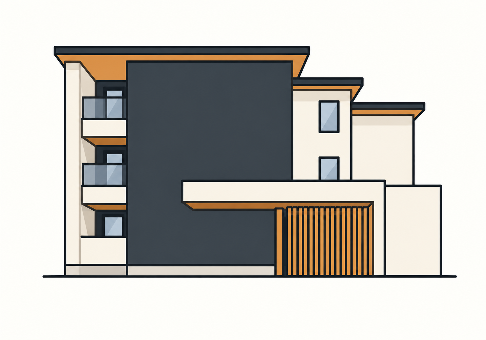
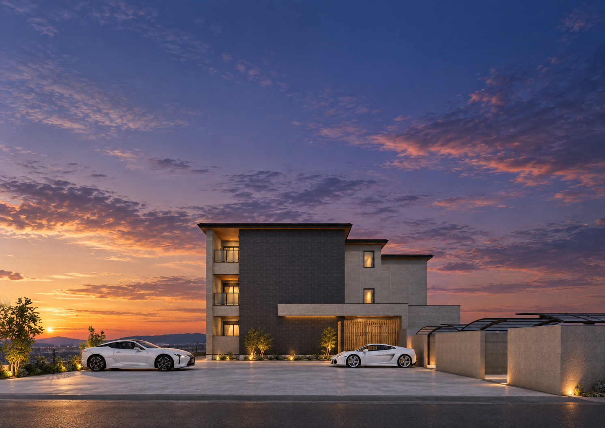
UZUMASA YASUI NIJO URACHO
土地の今と、その先。
暮らしと地域、その先まで考える資産活用計画。
PROJECT CONCEPT
3,000㎡を超える所有地を、いま使う場所と、未来へ残す場所に整理する。今回の計画は、道路の奥に位置する月極駐車場の一部から新しい収益資産をつくりながら、生産緑地や残地に次の選択肢を残す計画です。
そして建物の中にも、同じ思想を。1階のCOMMON SPACEは、昼は京都文化を体験する場へ、夕方は子ども食堂など地域にひらく居場所へ。用途を決めすぎず、時間とともに役割を変えられる余白を設けます。
土地全体を読み解き、道路・駐車場・生産緑地・残地。それぞれの役割を整理する。
京都文化の敷居をほどき、書・茶・手仕事に気軽に触れられる入口をつくる。
最大ボリュームを一度に建てず、将来の建築・駐車場・売却などの選択肢を残す。
京都の文化、地域との関係、子どもたちが立ち寄れる場所を、日常の中に残していく。
大切な資産を、あらゆる可能性とともに次の世代へつなぐ。
住む人と地域、京都と世界、大人と子ども。建物を介して、人と人の接点をつくる。
LAND STRATEGY
今回の建築は、所有地全体の完成形ではありません。いま必要な場所に、いま必要な役割を与える。その一方で、残された土地には、次のタイミング、または次の世代が改めて選べる可能性を残す。建物の配置だけではなく、土地がこれから辿る時間まで見据えます。
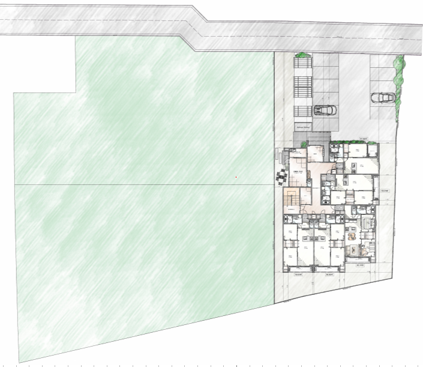
ARCHITECTURE
大きな面と水平ラインで建物に重心を与え、木調軒天と格子で柔らかさを重ねる。正面では静かに構え、近づくほど素材と陰影の変化が現れる外観を目指しました。
輪郭を探るラフスケッチから、素材と陰影を与え、完成像へ。完成形だけではなく、そこへ至る設計の思考も、この建物の個性です。
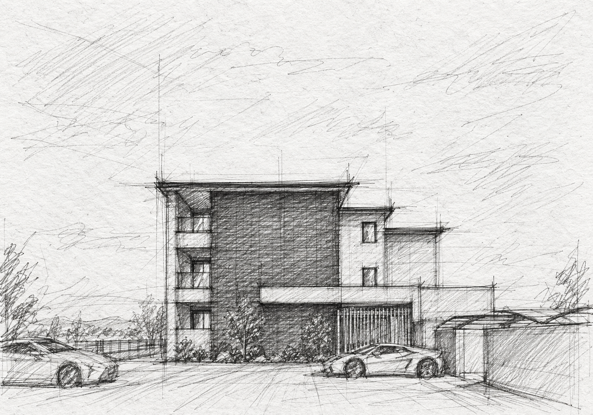
建物の重心、面の構成、水平ライン。まずは大胆に、佇まいの骨格を探ります。
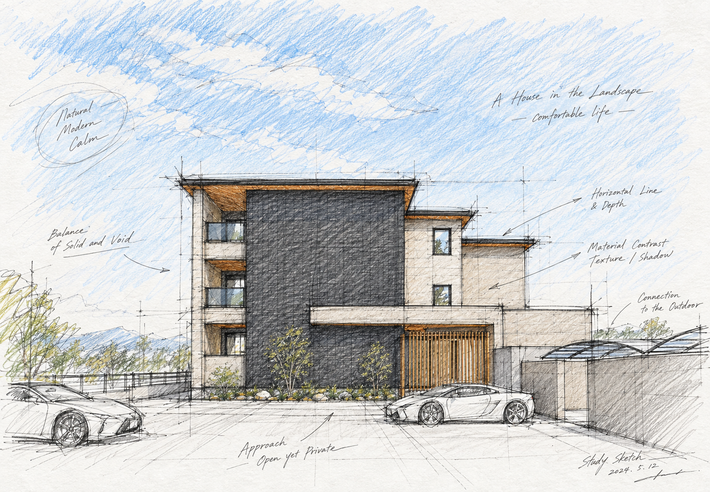
黒の大きな面、明るい外壁、木調軒天と格子。色と素材の関係を整えていきます。
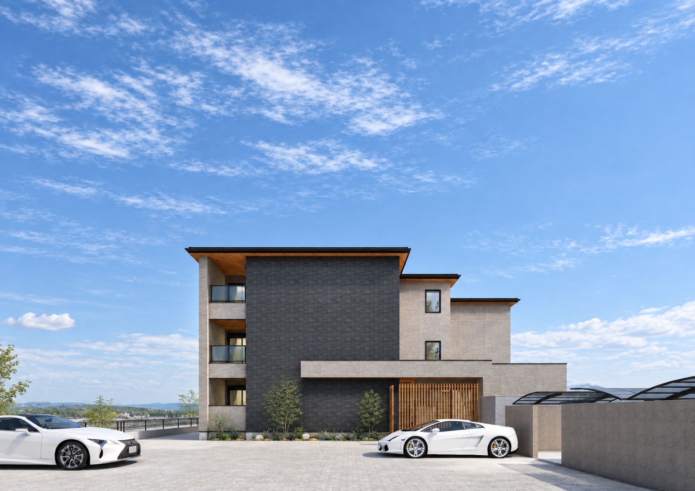
静かな存在感と、近づいたときの素材感。その両方を持つ建築として結晶化します。
SCENES OF ARCHITECTURE
遠くからは大きな面と水平ラインが建物の輪郭をつくり、近づけば木調軒天や格子、素材の陰影が見えてくる。昼から夕景へ、同じ建物に異なる表情が重なります。
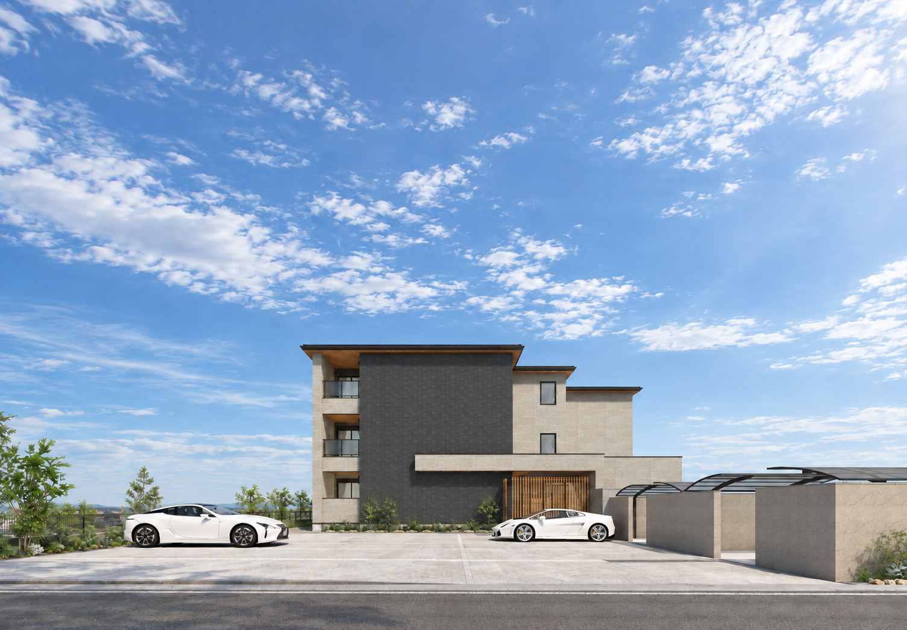
COMMON SPACE
COMMON SPACEは、建物の外と住まいの間に置かれた、小さな地域の接点です。昼と夕方で役割を変えながら、長く使い続けられる場を目指します。また、レジデンス側にも、風除室を抜けた先に少しのゆとり空間を設け、入居者様の暮らしに豊かさを生み出します。
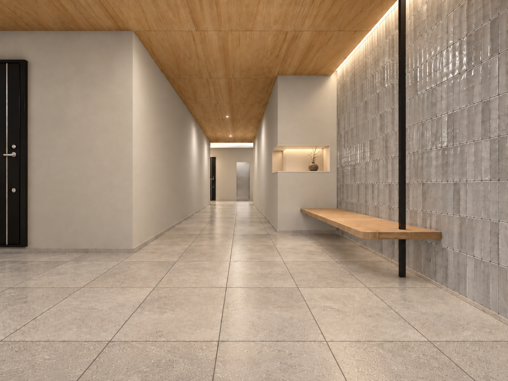
書道、茶道、着付け、つまみ細工など。KOTORIが培ってきた文化体験を、より身近な場所へ。国内外の人が京都文化に触れ、つくり、持ち帰るための小さな文化拠点として活用します。
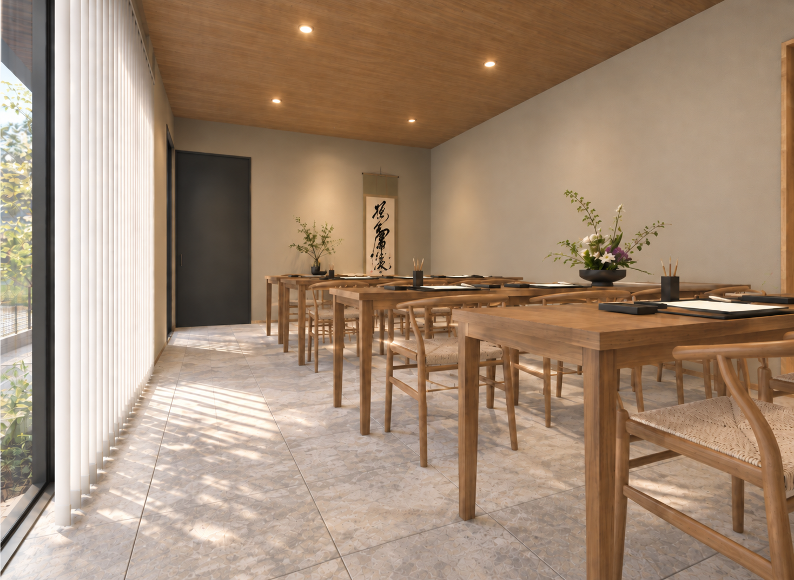
文化体験を行わない時間帯には、子ども食堂など、地域の子どもたちや家族が安心して立ち寄れる居場所としての活用も構想しています。ひとつの用途に固定せず、その時、その地域に必要な使い方へ変化できること。それも、この建物に残す「余白」です。
※掲載イメージは活用例です。具体的な運営内容・実施方法は、関係機関との協議を踏まえて今後検討します。
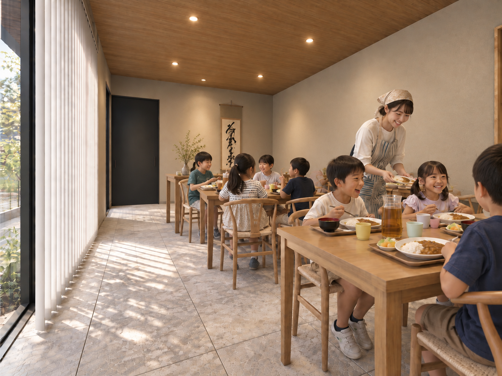
ROOM PLAN
全15戸のうち12戸を約60㎡前後の2LDKに。二人暮らしから子ども1人程度のファミリーまで、長く住み続けやすい構成を主役にしました。各階に1LDKを1戸組み合わせ、入居者層にも幅を持たせています。
1階平面図
LIVING QUALITY
外観や共用部だけではなく、住戸内部も暮らしの質を大切に。木の温度を感じる柔らかな空間と、すっきりとしたモダンな空間。フルオーダーだからこそ、住まいの表情も丁寧に整えます。
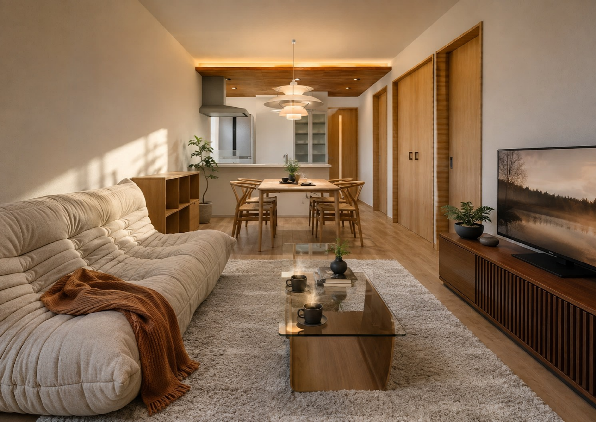
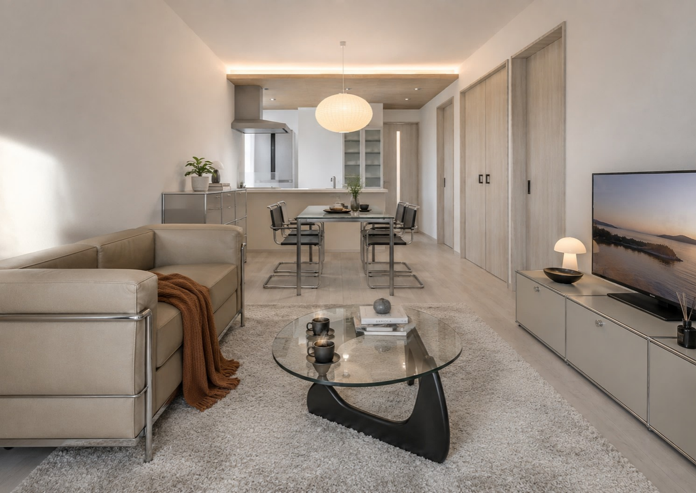
LOCATION
京都市営地下鉄東西線「太秦天神川」駅 徒歩11分。市内中心部へつながりながら、駅前の喧騒から少し離れた住宅地。日々の買い物や行政施設も徒歩・自転車圏に揃います。
京都市立安井小学校区 ／ 京都市立四条中学校区
OWNER VALUE / FUTURE
15戸の賃貸住宅をつくることが、この土地のゴールではありません。収益を生みながら、残された土地には次の判断ができる状態を残す。COMMON SPACEにも、文化、地域、子どもたちへと使い方がつながっていく余白を残す。
建物を完成させるだけではなく、選べる状態を残すこと。資産と文化と地域の関係を、次の世代へつなぐこと。それが、この計画で考えたい「資産活用」です。
UZUMASA YASUI NIJO URACHO